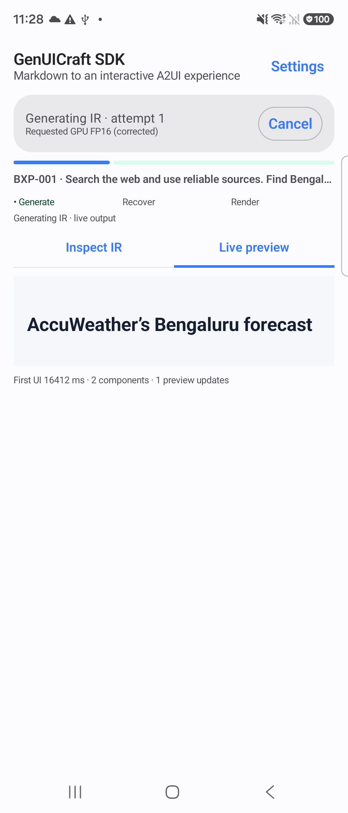
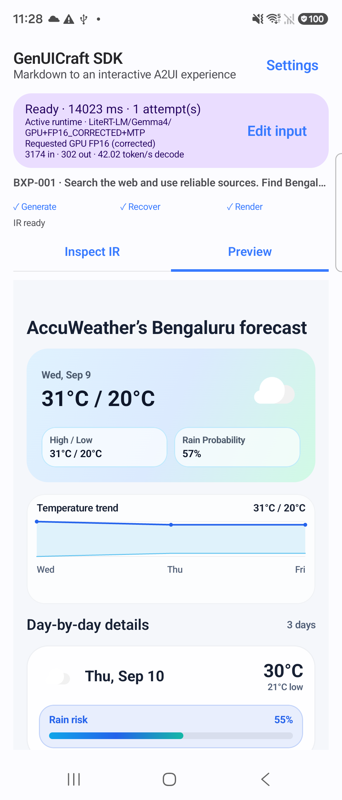
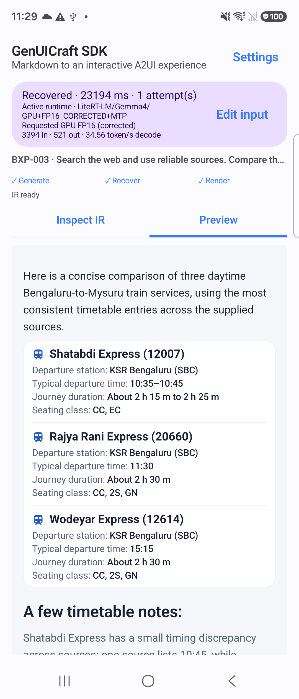
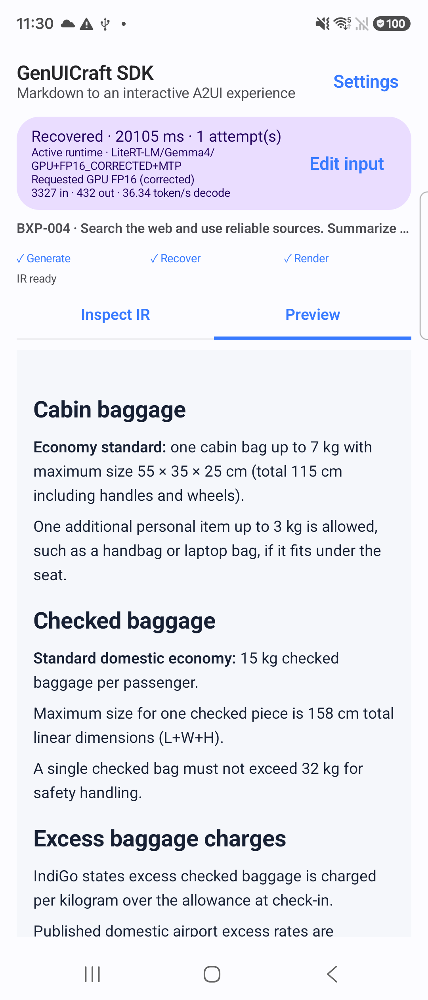
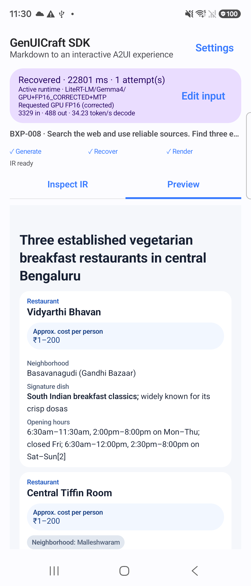
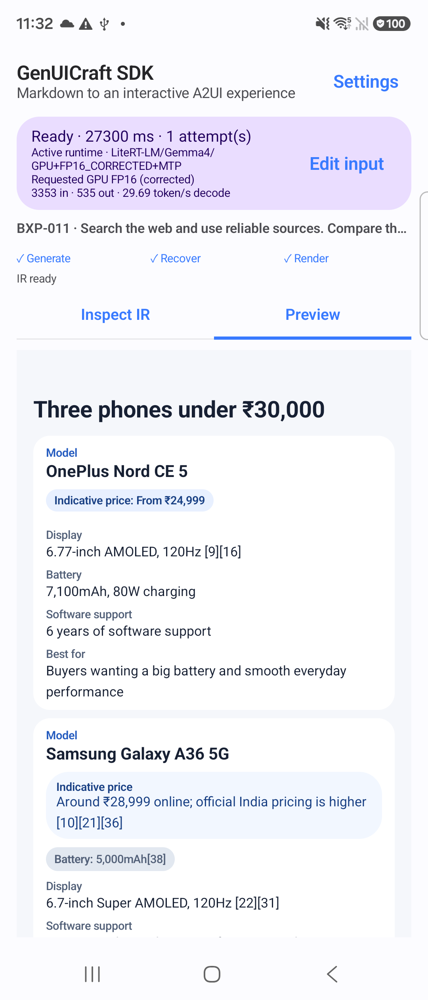

GenUICraft SDK 0.6.0 · 8 October 2026
Progressive native rendering
10/10 measured conversions completed; 5/5 streaming cases reached an early Compose frame boundary.
Replay remainder: 14 accepted only after terminal repair; 4 rejected. Replay measures character readiness.
Report · Summary / full hashes · Original full SDK log · Bridge 9-test log · State-test log · Native-test log · Replay diagnosis
Bixby source checks: 14 JavaScript / 18 host / 5 manager passed. Changed-file handoff (22 entries). Source/package evidence; no Bixby app build/device claim.
Five paired native cases
| Case | Raw equal | Final equal | First boundary on (s) | Updates | Wall on / off (s) | Wall change | Converter on / off (s) | Decode on / off (tok/s) | Init on / off (s) |
|---|---|---|---|---|---|---|---|---|---|
| BXP-001 · Weather | yes | yes | 10.077 | 5 | 15.054 / 16.280 | -7.5% | 14.023 / 15.373 | 42.02 / 37.51 | 4.962 / 5.247 |
| BXP-003 · Rail travel | yes | yes | 15.298 | 6 | 24.195 / 24.188 | +0.0% | 23.194 / 23.140 | 34.56 / 34.27 | 5.053 / 5.017 |
| BXP-004 · Airline baggage | yes | yes | 10.950 | 13 | 21.478 / 21.144 | +1.6% | 20.532 / 20.105 | 36.17 / 36.34 | 5.633 / 5.315 |
| BXP-008 · Restaurants | yes | yes | 17.012 | 5 | 24.061 / 23.869 | +0.8% | 23.013 / 22.801 | 32.39 / 34.23 | 4.973 / 5.422 |
| BXP-011 · Smartphones | yes | yes | 19.196 | 7 | 27.099 / 28.407 | -4.6% | 26.040 / 27.300 | 32.69 / 29.69 | 6.349 / 6.367 |
Raw matches: 5/5; final Express matches: 5/5. Matching hashes establish byte parity, not source fidelity.
First boundary is the next Compose frame boundary after preview composition, not verified draw or physical presentation. First UI can be heading/text rather than a completed card; the live warmup image shows a heading while generation remains active. Later revisions add content. Session wall includes initialization and MTP metrics cleanup and ends at observed completion before post-run screenshots (40 ms sampling). Converter elapsed is separate. One run per arm and different initialization/output can affect speed comparisons. All measured arms cold-initialized: True.
Native screenshots
Warmup live capture is separate from measured pairs. Final captures occur after inference. Open an image for full resolution.


COMPLETE · wall 20.786 s

COMPLETE · wall 20.786 s


COMPLETE · wall 15.054 s

COMPLETE · wall 16.280 s


COMPLETE · wall 24.195 s

COMPLETE · wall 24.188 s

COMPLETE · wall 21.478 s


COMPLETE · wall 21.144 s

COMPLETE · wall 24.061 s


COMPLETE · wall 23.869 s

COMPLETE · wall 27.099 s


COMPLETE · wall 28.407 s
Runtime, cleanup, and provenance
Device SM-F966B · FP16_CORRECTED · MTP True
Model SHA-256 7f01bdf1c6ba9bdf658e57c75001fc35a42edad88238bc5dab0a5f7dcf3de373
GPU FP16+MTP startup lines: 11; explicit cleanup lines: 0; maximum Q/DQ rejected: 0. The filtered log does not isolate cleanup duration.
10-08 23:28:06.217 23564 23634 I GenUICraftRuntime: Gemma4 backend=GPU; precision=FP16_CORRECTED; MTP=true; MTPRequested=true; modelSupportsMtp=true; thinking=false; metrics=true; model=/storage/emulated/0/Android/data/com.samsung.genuicraft/files/sdk_models/model-fp16-corrected.litertlm 10-08 23:28:21.308 23564 23634 I GenUICraftRuntime: Gemma4 backend=GPU; precision=FP16_CORRECTED; MTP=true; MTPRequested=true; modelSupportsMtp=true; thinking=false; metrics=true; model=/storage/emulated/0/Android/data/com.samsung.genuicraft/files/sdk_models/model-fp16-corrected.litertlm 10-08 23:28:37.257 23564 23634 I GenUICraftRuntime: Gemma4 backend=GPU; precision=FP16_CORRECTED; MTP=true; MTPRequested=true; modelSupportsMtp=true; thinking=false; metrics=true; model=/storage/emulated/0/Android/data/com.samsung.genuicraft/files/sdk_models/model-fp16-corrected.litertlm 10-08 23:28:53.889 23564 23634 I GenUICraftRuntime: Gemma4 backend=GPU; precision=FP16_CORRECTED; MTP=true; MTPRequested=true; modelSupportsMtp=true; thinking=false; metrics=true; model=/storage/emulated/0/Android/data/com.samsung.genuicraft/files/sdk_models/model-fp16-corrected.litertlm 10-08 23:29:18.682 23564 23634 I GenUICraftRuntime: Gemma4 backend=GPU; precision=FP16_CORRECTED; MTP=true; MTPRequested=true; modelSupportsMtp=true; thinking=false; metrics=true; model=/storage/emulated/0/Android/data/com.samsung.genuicraft/files/sdk_models/model-fp16-corrected.litertlm 10-08 23:29:44.035 23564 23634 I GenUICraftRuntime: Gemma4 backend=GPU; precision=FP16_CORRECTED; MTP=true; MTPRequested=true; modelSupportsMtp=true; thinking=false; metrics=true; model=/storage/emulated/0/Android/data/com.samsung.genuicraft/files/sdk_models/model-fp16-corrected.litertlm 10-08 23:30:06.216 23564 23634 I GenUICraftRuntime: Gemma4 backend=GPU; precision=FP16_CORRECTED; MTP=true; MTPRequested=true; modelSupportsMtp=true; thinking=false; metrics=true; model=/storage/emulated/0/Android/data/com.samsung.genuicraft/files/sdk_models/model-fp16-corrected.litertlm 10-08 23:30:28.024 23564 23634 I GenUICraftRuntime: Gemma4 backend=GPU; precision=FP16_CORRECTED; MTP=true; MTPRequested=true; modelSupportsMtp=true; thinking=false; metrics=true; model=/storage/emulated/0/Android/data/com.samsung.genuicraft/files/sdk_models/model-fp16-corrected.litertlm 10-08 23:30:51.973 23564 23634 I GenUICraftRuntime: Gemma4 backend=GPU; precision=FP16_CORRECTED; MTP=true; MTPRequested=true; modelSupportsMtp=true; thinking=false; metrics=true; model=/storage/emulated/0/Android/data/com.samsung.genuicraft/files/sdk_models/model-fp16-corrected.litertlm 10-08 23:31:18.063 23564 23634 I GenUICraftRuntime: Gemma4 backend=GPU; precision=FP16_CORRECTED; MTP=true; MTPRequested=true; modelSupportsMtp=true; thinking=false; metrics=true; model=/storage/emulated/0/Android/data/com.samsung.genuicraft/files/sdk_models/model-fp16-corrected.litertlm 10-08 23:31:45.677 23564 23634 I GenUICraftRuntime: Gemma4 backend=GPU; precision=FP16_CORRECTED; MTP=true; MTPRequested=true; modelSupportsMtp=true; thinking=false; metrics=true; model=/storage/emulated/0/Android/data/com.samsung.genuicraft/files/sdk_models/model-fp16-corrected.litertlm